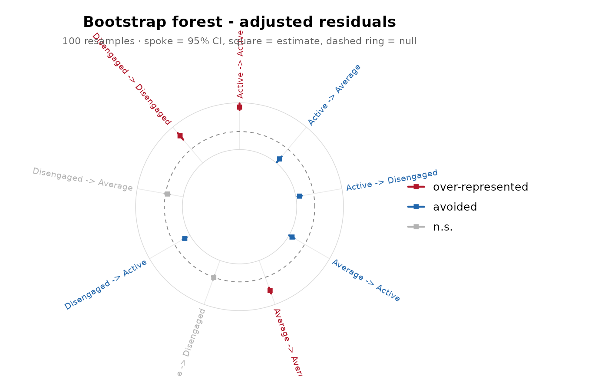
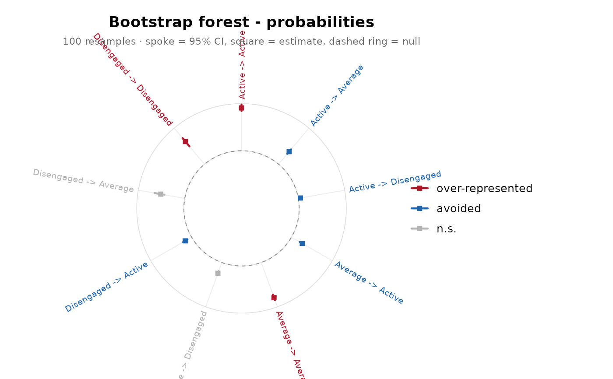
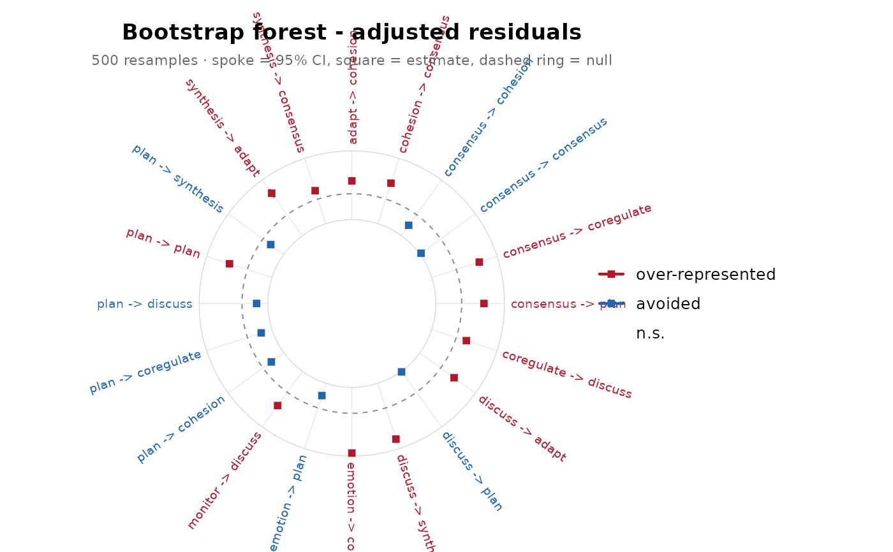

plot_forest() draws the bootstrap confidence intervals of a fit's
transitions as a circular forest plot, one spoke per transition: the spoke
spans the bootstrap confidence interval, a square marks the observed
estimate, and a dashed ring marks the null value. A forest plot shows an
estimate and its confidence interval for each of many quantities, so that
their size and precision can be compared at once; here the quantities are the
transitions, and the plot shows which transitions keep their direction across
resamples of the sequences and how precisely each is estimated.
Transitions whose adjusted residual is stable across resamples are coloured
by direction (red over-represented, blue avoided) and the others are grey.
The interval can be that of the adjusted residual (default), the count, the
transition probability or Yule's Q. plot() on a bootstrap result draws the
same display.
The intervals come from bootstrap_lsa(); read them as a table with
transitions(boot). For analytic intervals of the transition
probabilities, see certainty_lsa() and its plot method.
Arguments
- boot
A bootstrap result from
bootstrap_lsa().- metric
Interval to draw:
"residuals"(default),"count","prob"or"yules_q".- n_top
Keep only the
n_toptransitions with the largest absolute estimate. DefaultNULL(all).- show_nonsig
Draw transitions whose residual is not stable, in grey (default
TRUE).- label_size
Size of the transition labels (default
2.6).- x
A bootstrap result from
bootstrap_lsa(), forplot().- ...
Passed to
plot_forest(), for examplemetricorn_top.
Value
A ggplot object, drawn when printed. plot() on a bootstrap
result returns the same object.
Conditions
Errors carry the class lagdynamics_error and lagdynamics_bad_input
when the bootstrap holds no interval for metric, or when no
transition is left to draw.
Examples
set.seed(1)
boot <- bootstrap_lsa(lsa(engagement), R = 100)
plot_forest(boot)

plot(boot, metric = "prob")

# \donttest{
boot9 <- bootstrap_lsa(lsa(group_regulation), R = 500)
plot_forest(boot9, n_top = 20, show_nonsig = FALSE)

# }